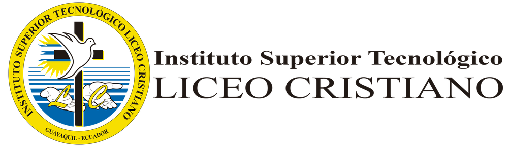

El Instituto Superior Tecnológico Liceo Cristiano es una institución de educación superior ubicada en Guayaquil, Ecuador, comprometida con la formación de profesionales con valores y preparados para el mundo laboral.
Nuestra oferta académica está orientada a la práctica y a las necesidades de las empresas. Las inscripciones para el próximo ciclo están abiertas, así que es un buen momento para elegir tu carrera y empezar tu futuro profesional.
Si quieres conocer cómo es otra institución educativa del país, visita el sitio web oficial de la ESPOL.